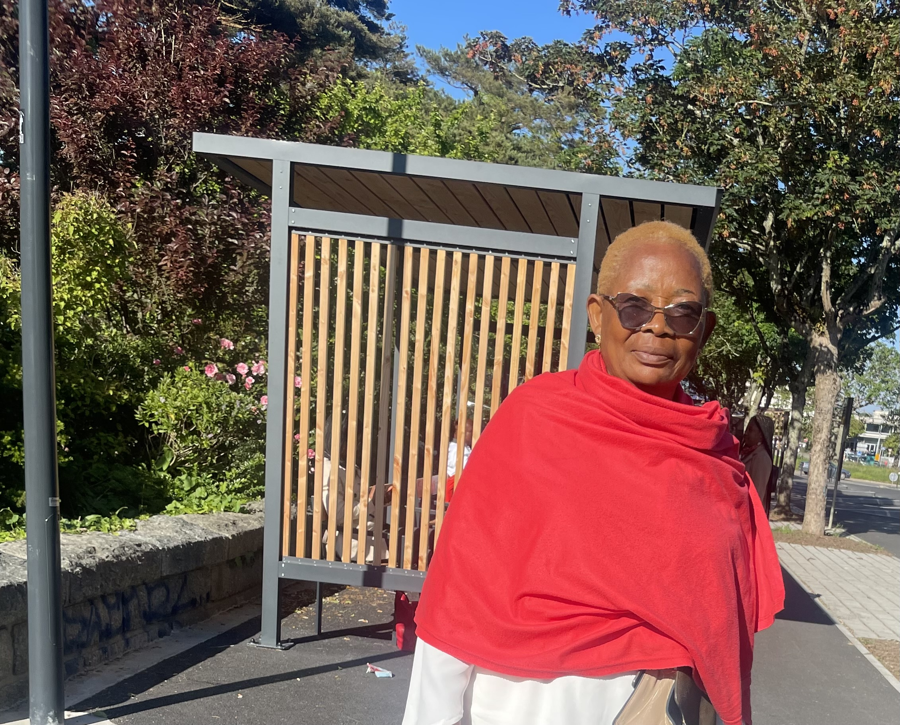

<div class="about-home">
    <div class="content my-container">
        <h2 class="title">Temoignages</h2>
        <div class="bride-groom">
            <div class="married bride">
                
                <div class="texts-bloc">
                    <p class="subtitle">
                        <i class="pi pi-arrow-up"></i>
                        <span>La Veuve</span>
                    </p>
                    <p class="name">Mme KOMBANG Rose</p>
                    <div class="speech">
                        <p>Il y a quelques jours, j’ai perdu mon époux , la père de ces merveilleux enfants que la grâce
                            divine ne nous a donné.

                            Le pilier de ta famille, le tête pensante, l’homme qui avait la solution à tous les
                            problèmes.
                            je me souviens de cette phrase : je vais vous sortir de là. Tu étais non seulement mon époux
                            mais et surtout mon meilleur ami avant que le malin ne passa par là.
                        </p>
                        <p>Tu as toujours été là pour moi , pour les enfants. Ta présence a toujours été une rassurance
                            pour nous, même dans les moments les plus difficiles.

                            Je t’en serai éternellement reconnaissante. Ta générosité et ton attention ont fait de toi
                            quelqu’un qui a toujours mis les autres avant toi, au point de tourner presque le dos à ceux
                            qui t’aimaient peut-être un peu plus que les autres , les enfants et moi.
                        </p>
                        <p>Je sais que tu continueras de veiller sur nous depuis là-haut.Ma force reside désormais dans
                            le souvenir des moments que nous avons partagés.Que le Seigneur Dieu de miséricorde
                            t’accueille dans son royaume de paix.❤️</p>
                    </div>
                </div>
            </div>
            <div class="married groom">
                
                <div class="texts-bloc">
                    <p class="subtitle">
                        <span>Le fils aîné</span>
                        <i class="pi pi-arrow-up"></i>
                    </p>
                    <p class="name">Jean Lionel MEDJO KOMBANG</p>
                    <div class="speech">
                        <p>Toute sa vie, il a été un homme tourné vers les autres. Un homme altruiste, généreux,
                            désintéressé. Quand je pense à lui, une parole biblique me revient toujours à l’esprit : le
                            Psaume 109:1-31. C’est dans cette prière que je retrouve l’écho de sa vie – une vie donnée,
                            offerte, parfois incomprise, mais remplie de foi et de dignité.

                            Il s’en va aujourd’hui, sans que nous ayons vraiment eu le temps – ni peut-être les moyens –
                            de lui rendre tout ce qu’il a fait pour nous. Et cela nous laisse un vide, mais aussi une
                            dette morale : celle de perpétuer ce qu’il nous a appris. Celle de vivre avec la même
                            humilité, la même droiture, la même générosité.

                            Papa, tu as bien combattu le bon combat. Tu as tenu ta mission jusqu’au bout, sans bruit,
                            sans plainte.

                            Repose en paix, Papa. Que la terre de tes ancêtres t'accueille comme tu as accueilli tant
                            d'enfants.

                            Et que ton âme repose dans la paix de Celui en qui tu as cru.</p>
                        <p> Avec des moyens modestes, il a su nourrir de grandes ambitions pour nous. Il a insisté pour
                            que nous allions à l’école, que nous apprenions, que nous progressions. Grâce à lui, trois
                            de ses enfants sont aujourd’hui devenus ingénieurs. Ce n’est pas un miracle, c’est le fruit
                            de son sacrifice silencieux, de ses renoncements, de sa vision.

                            Toute sa vie, il a été un homme tourné vers les autres. Un homme altruiste, généreux,
                            désintéressé. Quand je pense à lui, une parole biblique me revient toujours à l’esprit : le
                            Psaume 109:1-31. C’est dans cette prière que je retrouve l’écho de sa vie – une vie donnée,
                            offerte, parfois incomprise, mais remplie de foi et de dignité.

                            Il s’en va aujourd’hui, sans que nous ayons vraiment eu le temps – ni peut-être les moyens –
                            de lui rendre tout ce qu’il a fait pour nous. Et cela nous laisse un vide, mais aussi une
                            dette morale : celle de perpétuer ce qu’il nous a appris. Celle de vivre avec la même
                            humilité, la même droiture, la même générosité.
                        </p>
                        <p>Papa, tu as bien combattu le bon combat. Tu as tenu ta mission jusqu’au bout, sans bruit,
                            sans plainte.

                            Repose en paix, Papa. Que la terre de tes ancêtres t'accueille comme tu as accueilli tant
                            d'enfants.

                            Et que ton âme repose dans la paix de Celui en qui tu as cru.</p>
                    </div>
                </div>
            </div>
        </div>


        <div class="bride-groom">
            <div class="married bride">
                
                <div class="texts-bloc">
                    <p class="subtitle">
                        <span>La fille ainée</span>
                        <i class="pi pi-arrow-up"></i>
                    </p>
                    <p class="name">Mpouassou Kombang Rose Mireille</p>
                    <div class="speech">
                        <p> he True Story of the Goodness of God" — A Tribute to My Father
                        </p>
                        <p> Daddy, I’m happy because I know you hear me and read me.
                            But I’m also crying—because I miss you. Deeply.

                            When I picture our childhood, I see a story shaped by the presence of an indestructible
                            hero: a conqueror, a fair and good king. You were a living display of God's assurance to
                            us—the Kombang family. Yes, we’ve come from far, and you were always the pillar that stood
                            tall through every storm.

                            It took me truly knowing the Lord—or rather, being known by Him—to understand that your
                            strength, your courage, your unshakeable resilience, and the favor you carried were divine
                            gifts. God gave you to us as a sign: that we were chosen to reflect His glory.

                            Daddy, your departure broke my heart in a way I cannot fully express. It nearly made me
                            question God. Even now, it’s hard to accept. I had always carried the hope that you and I
                            would serve Him side by side—for the sake of the people He entrusted to you. The people you
                            loved so dearly, so sacrificially, always putting their needs before your own to ensure
                            harmony and peace among many.
                        </p>
                        <p> I remember weeping over them—on flights, in dreams—holding onto hope for a great awakening.
                            God understands those tears perfectly, and I know… you do too.

                            We are two souls who received the same familial burden—but in different ways.

                            And today, I am deeply thankful to the Lord Jesus, who placed His seal of ownership on you
                            before your departure. You belong to Him. You are His property. You are irreplaceable. Your
                            legacy and your dreams will not fade—they will live on.

                            Cheer up, Papa.
                            The Morning of Resurrection is near. And when it comes, we will meet again—in perfect
                            alignment, in the fullness of joy, and in eternal perfection.

                            Loving you—permanently.</p>
                    </div>
                </div>
            </div>
            <div class="married groom">
                
                <div class="texts-bloc">
                    <p class="subtitle">
                        <span>Au nom de tes amis du VFC-Bangangté.</span>
                        <i class="pi pi-arrow-up"></i>
                    </p>
                    <p class="name">Mbou Emmanuel</p>
                    <div class="speech">
                        <p>Cher grand Frère,
                            Tu nous as fais t'appeler
                            Anakonda, Kondos, Yos, long serpent et que sais-je encore!
                            Tous ces pseudonymes dévoilaient l'homme simple, l'homme humble, l'homme courageux' l'homme
                            généreux , l'homme drôle qui habitaient en une seule et même personne que tu étais.
                            La nouvelle de ton de départ de cette terre dont tu aimais bien les délices nous est tombée
                            sur la tête comme une massue.
                            Nous t'avons connu comme un homme fort et courageux mais, de là à te voir partir aussi
                            facilement, on se pose pas mal de questions qui ne trouveront plus de réponses car toi seul
                            pouvais nous donner le réponse.
                            Tu es parti de Bangangté, laissant derrière toi, ta routine de vie qui pourrait encore
                            proroger ton espérance de vie. Hélas! </p>
                        <p>Tu t'en va avec cette grande bibliothèque d'où toi seul tu savais dénicher les approches
                            adaptées aux résolutions de problèmes qui naissaient dans ton groupe chéri, le VFC-B.
                            Grand Frère, le VFC-B te pleure; que dis-je? Tout Bangangté te pleure. On ne verra plus le
                            grand danseur de tous les temps qui défiait les plus jeunes aux pas de danse harmonieusement
                            appliqués sur les pistes lors de nos multiples escapades sportives.
                            Yos, tu nous manqueras vraiment. Toi qui savais arracher le sourire même aux plus nerveux du
                            groupe, tu t'en vas avec tout ce don. Tu as été tellement fier de toi qu'a l'idée de savoir
                            que tu serais désormais unijambiste, tu as préféré t'en aller. Mais grand Frère, Anakonda,
                            où que tu sois entrain de partir, souviens toi, que tu as eu une famille à Bangangté, dont
                            tu as participé à l'épanouissement et au développement. Une famille qui te pleure, une
                            famille qui ne t'oubliera jamais.</p>
                        <p>Tu avais promis nous amener jouer à Bameka, un de tes anciens fiefs. Nous attendons toujours.
                            Adieu grand Frère, Adieu Anakonda, Adieu Kondos, Adieu Yos , Adieu long serpent, Adieu. Le
                            grand danseur de tous les temps..
                            Tes amis du VFC-Bangangté.

                            Contractes en gardant ses mots</p>
                    </div>
                </div>
            </div>
        </div>

        <div class="bride-groom">
            <div class="married bride">
                
                <div class="texts-bloc">
                    <p class="subtitle">
                        <span>Représentant des neuveux</span>
                        <i class="pi pi-arrow-up"></i>
                    </p>
                    <p class="name">Étienne Mvogo</p>
                    <div class="speech">
                        <p>Papa Kombang était pour moi une grande source d'inspiration, un confident. J'avais trouvé en
                            lui, la bibliothèque de la famille, il savait écouter et encourager, toujours prêt à donner
                            les conseils, son espoir était qu'un jour la grande famille Zangbwala se réconcilierait avec
                            elle même et il s'était attelé à cet objectif, dont il pensait que les funérailles de grand
                            père était le point de départ. En bref papa Kombang était pour moi un oncle, comme on le dit
                            chez nous<< chez qui le neveu ne pleure pas<< , J'ai espoir que je retrouverai mon idole au
                                matin de la résurrection. </p>
                    </div>
                </div>
            </div>
            <div class="married groom">
                
                <div class="texts-bloc">
                    <p class="subtitle">
                        <span>Le fils Cadet</span>
                        <i class="pi pi-arrow-up"></i>
                    </p>
                    <p class="name">Kombang Zangbwalla Eloa</p>
                    <div class="speech">
                        <p> Papa, tu as été un pilier dans ma vie, un modèle de courage, de détermination et d'amour. Ta
                            présence a illuminé mon chemin et tes conseils m'ont guidé à travers les moments difficiles.
                            Je me souviens tu me disais toujours que nous devons mettre le temps en facteur ces derniers
                            temps tu m'as motré exactement ce que cela signifiait . Tu as attaqué tellement de chantiers
                            en meme temps qu'on aurait dit que tu sentais la mort s'avancer vers toi. Tu as toujours été
                            là pour moi, pour m'écouter, pour me soutenir et pour m'encourager à être la meilleure
                            version de moi-même.
                        </p>
                        <p>Ta disparition laisse un vide immense dans mon cœur et dans ma vie, mais je sais que ton
                            esprit continue de me guider et de m'inspirer. Je vais continuer à vivre selon tes valeurs
                            et tes principes, et je vais faire de mon mieux pour rendre hommage à ta mémoire.
                        </p>
                        <p>"Papa, tu as été un pilier dans ma vie, un modèle de courage, de détermination et d'amour. Ta
                            présence a illuminé mon chemin et tes conseils m'ont guidé à travers les moments difficiles.
                            Je me souviens tu me disais toujours que nous devons mettre le temps en facteur ces derniers
                            temps tu m'as motré exactement ce que cela signifiait . Tu as attaqué tellement de chantiers
                            en meme temps qu'on aurait dit que tu sentais la mort s'avancer vers toi. Tu as toujours été
                            là pour moi, pour m'écouter, pour me soutenir et pour m'encourager à être la meilleure
                            version de moi-même.

                            Ta disparition laisse un vide immense dans mon cœur et dans ma vie, mais je sais que ton
                            esprit continue de me guider et de m'inspirer. Je vais continuer à vivre selon tes valeurs
                            et tes principes, et je vais faire de mon mieux pour rendre hommage à ta mémoire.

                            Papa, je t'aime et je t'aimerai toujours. Repose en paix.</p>
                    </div>
                </div>
            </div>
        </div>

        <div class="bride-groom">
            <div class="married bride">
                
                <div class="texts-bloc">
                    <p class="subtitle">
                        <span>Au nom de l'Assbadja</span>
                        <i class="pi pi-arrow-up"></i>
                    </p>
                    <p class="name">Alexis Valentin</p>
                    <div class="speech">
                        <p>Hommage à KOMBANG ZANGBWALLA Eloa

                            Mon beau, mon grand, mon conseiller… C’est ainsi que je t’appelais, avec affection et
                            respect.

                            Depuis l’annonce de cette terrible et douloureuse nouvelle, nous sommes profondément
                            bouleversés. Tous les membres de l’Association des Badjué de l’arrondissement du Dja
                            (Mindourou) à Douala sont consternés et attristés par ton départ.

                            Par ton engagement sans faille, ta sagesse et tes conseils avisés, tu as été un pilier
                            essentiel au sein de notre communauté. C’est pour cela que, bien au-delà des liens
                            familiaux, j’avais choisi de faire de toi mon conseiller. Tu étais une source constante
                            d’inspiration.

                            Aujourd’hui, l’Éternel a rappelé son serviteur auprès de Lui. Mais tu resteras vivant dans
                            nos cœurs et dans nos souvenirs. Nous garderons de toi ton immense générosité, ta
                            gentillesse légendaire, ton sens de l’humour, ton respect pour autrui, et tant d’autres
                            qualités qui faisaient de toi un homme exceptionnel.
                        </p>
                        <p>Non, la mort ne t’a pas anéanti. Elle n’a fait que mettre un terme à tes activités
                            terrestres. Ton œuvre, elle, demeure.

                            Que l’Éternel, dans sa miséricorde, te pardonne tes fautes et t’accueille dans Son Royaume
                            de paix. Nous prions pour que tu intercèdes désormais auprès de Lui, pour ta famille et pour
                            tous ceux qui t’ont aimé, afin que l’héritage de tes actions et de tes valeurs perdure.
                        </p>
                        <p>Va, mon beau, repose en paix.

                            Que la terre de tes ancêtres te soit légère.
                        </p>
                    </div>
                </div>
            </div>
            <div class="married groom">
                
                <div class="texts-bloc">
                    <p class="subtitle">
                        <span>Un beau fils</span>
                        <i class="pi pi-arrow-up"></i>
                    </p>
                    <p class="name">Samuel Mandeng</p>
                    <div class="speech">
                        <p> Hommage à Monsieur Kombang Zanbwalla Eloa

                            C’est avec une grande émotion et un profond respect que je rends hommage à un homme
                            remarquable : Monsieur Kombang Zanbwalla Eloa, mon beau-père.

                            Lors de notre première rencontre, il dégageait une force tranquille, une présence forte mais
                            rassurante. Il n’avait pas besoin de parler fort pour qu’on l’écoute — sa simple façon de
                            s’exprimer captivait l’attention. Il maîtrisait l’art de la parole avec intelligence et
                            puissance, choisissant ses mots avec soin, touchant les esprits par sa sagesse et sa
                            profondeur.

                            C’était un homme fier, droit et profondément attaché à la justice. Il savait faire la part
                            des choses, défendre ce qui est juste et encourager chacun à donner le meilleur de soi. Ceux
                            qui l’ont connu savent à quel point il représentait un repère. Il n’imposait pas par la
                            force, mais par l’exemple.</p>
                        <p> Ce que j’ai aussi découvert en lui, c’est une simplicité touchante. Malgré sa stature morale
                            et intellectuelle, il était d’une grande humilité. Il aimait sincèrement sa famille,
                            profondément et discrètement. Il donnait sans bruit, protégeait sans se faire voir, et
                            aimait sans condition.

                            Je me suis senti accepté de lui dès le début, comme si j’avais toujours eu une place dans sa
                            vie. Ce sentiment d’accueil, de reconnaissance silencieuse, restera à jamais gravé en moi.
                            Il m’a offert une confiance précieuse et un lien que rien ne pourra briser.

                            Aujourd’hui, il nous quitte physiquement, mais il demeure en nous. Dans ses paroles qui
                            résonnent encore, dans ses gestes, dans ses valeurs qu’il a su transmettre, dans l’amour
                            qu’il a semé.
                        </p>
                        <p>Je crois qu’il est désormais dans un monde de paix, un monde meilleur, auprès du Seigneur. Et
                            j’ai foi que nous nous reverrons un jour.

                            "Je suis la résurrection et la vie. Celui qui croit en moi vivra, même s’il meurt."
                            – Jean 11:25

                            Reposez en paix, Monsieur Kombang. Votre héritage est vivant, et votre souvenir éternel.</p>
                    </div>
                </div>
            </div>
        </div>

        <div class="bride-groom">
            <div class="married bride">
                
                <div class="texts-bloc">
                    <p class="subtitle">
                        <span>Un pétit fils</span>
                        <i class="pi pi-arrow-up"></i>
                    </p>
                    <p class="name">Nombo Amos Christian</p>
                    <div class="speech">
                        <p> Grand-père de qui ? Grand-père de moi !

                            C’était ton refrain préféré quand tu chantais du rap avec nous. Et à chaque fois, on
                            reprenait tous en chœur, en riant aux éclats. Ce moment te résume si bien : un grand-père
                            proche de ses petits-enfants, complice, joyeux, et toujours jeune de cœur.

                            Tu n’étais pas seulement un grand-père, tu étais un véritable coach de vie.

                            C’est toi qui nous as transmis l’amour du sport, en particulier des arts martiaux. Grâce à
                            ton exemple, ma petite sœur Yvanna et moi pratiquons aujourd’hui le Taekwondo avec passion
                            et détermination. Tu étais fier de nous voir grandir dans cette discipline, que tu
                            considérais comme une école de rigueur et de respect.
                        </p>
                        <p> Quand nous étions plus jeunes, tu nous emmenais souvent jouer au football avec ton club des
                            vétérans à Bangangté. Tu nous montrais que l’âge n’efface jamais la passion, et que rester
                            actif, c’est aussi rester vivant.

                            Et dans les dernières années de ta vie, tu nous as appris à aimer les choses simples : aller
                            au champ à Lendi, marcher au bord du fleuve Dibamba à Japoma… Tu nous montrais la beauté de
                            la nature, l’importance de l’effort, et la valeur du silence partagé.

                            Grand-père, tu nous as transmis des valeurs profondes, avec amour et humour. Tu nous as
                            guidés sans jamais nous imposer, encouragés sans jamais juger.

                            Tu étais notre héros, notre modèle, notre ami</p>
                        <p> Aujourd’hui, nous sommes tristes. Mais nous sommes aussi fiers. Fiers d’avoir été les
                            petits-enfants d’un homme aussi exceptionnel. Fiers de continuer à porter en nous un peu de
                            toi.

                            Grand-père de qui ?
                            Grand-père de nous. Pour toujours.
                            Repose en paix, grand-père.

                            Tu restes à jamais dans nos cœurs</p>
                    </div>
                </div>
            </div>
            <div class="married groom">
                
                <div class="texts-bloc">
                    <p class="subtitle">
                        <span>2 petits fils</span>
                        <i class="pi pi-arrow-up"></i>
                    </p>
                    <p class="name">Jeremy and Madiba</p>
                    <div class="speech">
                        <p> GrandPa we don't know why you had to leave so early.
                            But we give it to God, we choose to look unto Jesus your savior and Lord.

                            We miss you.
                            You are forever in our hearts and irreplaceable for our lifetime.
                            Bless you GrandPa we love you.

                            Jeremy and Madiba. </p>
                    </div>
                </div>
            </div>
        </div>

        <div class="bride-groom">
            <div class="married bride">
                
                <div class="texts-bloc">
                    <p class="subtitle">
                        <span>Un petit fils</span>
                        <i class="pi pi-arrow-up"></i>
                    </p>
                    <p class="name">Papouh</p>
                    <div class="speech">
                        <p>Je voudrais vous parler d’une personne à laquelle je tiens et cette personne est mon
                            grand-père. Mon grand-père et moi avons partagé plusieurs moments ensemble.

                            Il a construit pour que je devienne l’homme que je suis maintenant. Il a tout fait pour me
                            faire plaisir malgré son âge. J’étais même étonné de comment une personne ayant 72 ans ait
                            pu faire autant d’efforts pour mon bien-être</p>
                        <p>Maintenant, il nous a quittés et je suis triste et fier pour mon grand-père qui a tenu bon
                            mais il ne pouvait plus continuer. Alors, dans ce discours, je voudrais que vous sachiez que
                            j’aimais beaucoup mon grand-père. Que Dieu lui bénisse et qu’il sache que tous ses efforts
                            qu’il a fournis ne sont pas, ou n’ont pas été en vain, car je continuerai à faire tout son
                            enseignement et je prie qu’il soit en paix là où il est.</p>
                    </div>
                </div>
            </div>
            <div class="married groom">
                
                <div class="texts-bloc">
                    <p class="subtitle">
                        <span>Et toi ?</span>
                        <i class="pi pi-arrow-up"></i>
                    </p>
                    <p class="name">C'est quoi ton témoignage?</p>
                    <div class="speech">
                        <p> </p>
                        <p></p>
                        <p></p>
                    </div>
                </div>
            </div>
        </div>


        <div class="bride-groom">
            <div class="married bride">
                
                <div class="texts-bloc">
                    <p class="subtitle">
                        <span>Et toi ?</span>
                        <i class="pi pi-arrow-up"></i>
                    </p>
                    <p class="name">C'est quoi ton témoignage?</p>
                    <div class="speech">
                        <p> </p>
                        <p></p>
                        <p></p>
                    </div>
                </div>
            </div>
            <div class="married groom">
                
                <div class="texts-bloc">
                    <p class="subtitle">
                        <span>Et toi ?</span>
                        <i class="pi pi-arrow-up"></i>
                    </p>
                    <p class="name">C'est quoi ton témoignage?</p>
                    <div class="speech">
                        <p> </p>
                        <p></p>
                        <p></p>
                    </div>
                </div>
            </div>
        </div>

    </div>
</div>